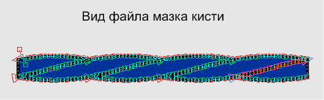

Мазок кисти глючит
Algis / 08.04.2011, 18:28/00:41
Форум:
Привет и здравия всем. Столкнулся с проблемой связанной с моими мазками кисти (Час глянул, тоже самое происходит и с родными Корелевскими мазками). Хотел про это написать в ветке сбора ошибок, но кажется она уже закрыта.
Проблема вот чем, Корел как то не правильно рисует мазки кисти, пробует он как то гладить кисть составляющие отрезки прямых, хоть это не зачем, и при этом понаставляет на линиях объекта кучу "ломанных" узлов, которые изкажают сам объект. Это хорошо видно когда абрис "толстый". Интересно, что это? Глюк Корела (15.2.0.661), или другая причина, ведь в Corel X4 все эти мазки работали и работают как и подобает? Ну в самом файле может понятней будет, о чем я тут.
ИМХО вывод напрашивается сам собой

Это про кучу узлов? Я бы поспорил...
Это самый маленький мазочек, его собратья длинной и до 1,5 метра есть, а узлов там хоть пруд пруди.
Странно то, что Corel X4 эти все "монстры", и прямые, и крученные всякими фигурами, мажет на ура и даже не спотыкается, а вот "ломается" именно Corel X5 версия.
Кстати, "ломанных" узлов иногда попадает и в других операциях, только вот поздно это замечаю и пока не получается отследить когда именно.
Я к тому что я убрал все лишние узлы, коих реально дофига, сделал кисть, и рисуется нормально. Понятно что понты типа "работало а тут нет" присутствуют, но лучше подготовить объекты перед сохранением в кисть так что бы они по минимум содержали узлов. )))
А вообще я вопрошу разработчиков по этому вопросу, если не забуду.